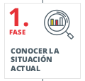
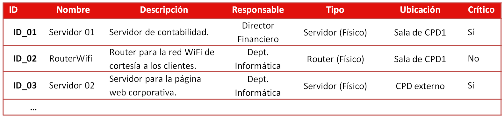
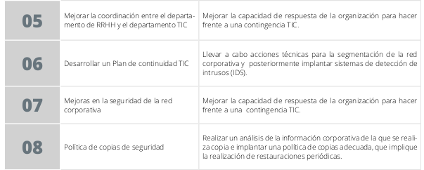

IS U1.2.1. PlanDirectorDeSeguridad

1.1 Plan director de seguridad
RA1¶
a) Se han definido los principios generales de la organización en materia de ciberseguridad, que deben ser conocidos y apoyados por la dirección de la misma.
ÍNDICE¶
| Punto | Slide numero |
|---|---|
| La información y los sistemas de información | 5 |
| Plan director de seguridad | 8 |
| PDS. Situación actual | 11 |
| PDS. Estrategia de la empresa | 24 |
| PDS. Definir proyectos e iniciativas | 28 |
| PDS. Clasificar y priorizar los proyectos | 29 |
| PDS. Aprobación por la dirección | 30 |
| PDS. Puesta en marcha | 31 |
La información y los sistemas de información¶
La información es un activo fundamental para el funcionamiento de las empresas.
Las empresas basan su actividad en sistemas de información con soporte tecnológico \(ordenadores\, tabletas\, página web\,…\)

Proteger los sistemas de información es proteger el negocio

¿Qué pasa si nos encontramos antes un incidente?
¿Qué riesgos estamos asumiendo?
¿Sabemos cómo dar respuesta?
Se necesita llevar a cabo una __ __gestión planificada __ __ de __ __ actuaciones __ __ en materia de Ciberseguridad
Plan director de seguridad¶
Si las herramientas tecnológicas y la información
que dan soporte a los servicios y procesos productivos de la organización son de gran valor para nuestra organización \,
debemos empezar a pensar en poner en práctica un
Plan Director de Seguridad .
Definición y __priorización __
de un
_conjunto de proyectos _
en materia de
seguridad de la información con el objetivo de
_reducir los riesgos _
a los que está expuesta la organización hasta unos niveles aceptables\,
a partir de un
análisis de la situación inicial
Plan¶
director de seguridad

Plan director de seguridad¶
Existen distintos factores que determinan la magnitud y complejidad del PDS. No obstante la elaboración y puesta en marcha siguen las fases siguientes:
PDS. Situación actual¶

1.- Situación actual
Análisis considerando aspectos técnicos\, organizativos\, regulatorios y normativos\, entre otros
1.1 Actividades previas
Antes de comenzar con el primer paso del análisis\, debemos realizar varias actividades previas:

a) Definir el alcance \, qué departamento\, y qué activos y procesos\, teniendo en cuenta los negocios críticos.
b) Identificar el responsable de gestión de activos: Identificar los activos y definir las responsabilidades sobre los activos
c) Valoración inicial: Valoración preliminar de la situación actual de la organización para determinar los controles \(medidas de todo tipo que implementa para contrarrestar los riesgos de seguridad\) y requisitos que son de aplicación.

Por lo general\, se puede usar para la evaluación de aspectos normativos y regulatorios el estándar 27002:2017\, diseñada para ser utilizada a la hora de designar controles para la selección e implantación de un Sistema de Seguridad de la Información\,
Solo aplicar los ámbitos que se crean convenientes dependiendo de la magnitud de la empresa\, es decir\, no es necesaria la implementación de todos los controles que se indican en la norma 27002:2017\, sino sólo aquellos que sean de aplicación a la empresa..
Elaborar un documento “ Documento de Selección de Controles ”\, con los controles o medidas de seguridad que se aplican a la organización y su grado de madurez\, es decir\, si están implantados y en qué estado están.


Norma par identificar los controles implantados.


Modelo de madurez.

d) Análisis de cumplimiento: Reuniones con los departamentos para evaluar el cumplimiento de los controles de seguridad.
También se requiere la inspección de la seguridad física\, por tanto es necesario una inspección in-situ de las instalaciones .Es útil para la __ recogida de problemas y evidencias el uso de checklist__ que incluyan los aspectos a revisar y comprobar.Analizar los resultados\, y establecer el cumplimiento de cada control en una escala nivel de o porcentaje madurez


e) Establecer objetivo a cumplir en materia de ciberseguridad en la empresa\, determinando los ámbitos a mejorar e identificar los aspectos en los que focalizar esfuerzos
Además de la ISO 27000\, otros estándares:
RGPD: Protección de información y cumplimiento legal
PCI-DSS: Tarjetas de crédito
COBIT: Buenas prácticas de gobernanza
ENS: Esquema nacional de seguridad\, en la Administración pública

1.2 Análisis técnico de seguridad
Queda cubierto por la valoración del grado de implantación y madurez de los controles
No obstante podemos realizar un trabajo de auditoría para valorar el grado de implantación de determinados controles e identificar deficiencias en cortafuegos\, antivirus\, sistema de detección de intrusos\, niveles de parcheado\, políticas de contraseñas\, etc.
El grado y nivel de esta auditoría dependerá de la empresa y antecedentes. Muchas veces este trabajo se externaliza.

1.3 Análisis de riesgos
A los que está expuesta nuestra organización\, siguiendo las siguientes etapas:


1.3 Análisis de riesgos
Definir el alcance del análisis de riesgos \, que vendrá definido por el alcance del PDS.
Identificar los activos : Aquellos más importantes que guardan relación con el departamento/proceso objeto del estudio.
Identificar/seleccionar las amenazas a los que están expuestos.
Evaluar el riesgo para cada par activo-amenaza \, estimaremos la probabilidad de que la amenaza impacte sobre el negocio: probabilidad x impacto.
Identificar vulnerabilidades y salvaguardas : Las vulnerabilidades penalizarán a la hora de evaluar el riesgo\, de la misma forma que las salvaguardas aplicadas contribuirán a reducir el riesgo. Iniciativas para implantar controles o salvaguardas.
Tratar el riesgo . Tomar una estrategias y obtener riesgo residual tras aplicar estrategia.

Elementos que participan durante la gestión del análisis de riesgos.

Elementos que participan durante la gestión del análisis de riesgos.



Se tendrá que establecer un nivel de riesgo aceptable\, que será el umbral que determina los riesgos que deben ser tratados y los riesgos que son asumibles.
Para cada uno de los riesgos se tendrá que definir una de estrategias principales:

PDS. Estrategia de la empresa¶

Esto implica considerar los proyectos en curso y futuros\, cambios\, reorganizaciones \, etc.
También es importante t ener en cuenta si la organización opta por una estrategia de centralización de servicios\, por la externalización de los servicios TIC \, si forma parte de un grupo empresarial mayor o si va a iniciar la actividad en algún sector distinto del actual que pueda generar requisitos legales adicionales.
Esta fase es fundamental para implantar medidas de seguridad acorde a la naturaleza de nuestra organización.
Alinear estrategia de seguridad\, estrategia TIC y __ __estrategia __ general del negocio.__
PDS. Definir proyectos e iniciativas¶

A partir de la información obtenida hasta el momento debemos definir las acciones e iniciativas.
Los ámbitos tratados son distintos\, por tanto las iniciativas serán diversas
Definir iniciativas dirigidas a mejorar los trabajos actuales para que contemplen los marcos normativos y regulatorios.
Conjunto de acciones relacionadas con los controles técnicos físicos cuya ausencia o insuficiencia hemos detectado
Definir la estrategia a seguir así como los proyectos más adecuados para gestionar los riesgos por encima del riesgo aceptable.




Es clave tener en cuenta la estrategia de la empresa a la hora de indicar las acciones a llevar a cabo.

PDS. Clasificar y priorizar los proyectos¶

Clasificar las iniciativas\, por ejemplo en base al criterio de origen de las mismas:
Derivadas de la evaluación del cumplimiento normativo y regulatorio
análisis técnico
análisis de riesgos
El tipo de acción
técnica
organizativa
regulatoria
También en base al esfuerzo y coste temporal : proyectos a corto\, medio y largo plazo.
También usar regla parto 20/80\, para con poco esfuerzo producir mejoras sustanciales: quick win .
PDS. Aprobación por la dirección¶
Una vez se tenga un borrador \, debe ser revisado y aprobado por la dirección .
Una vez aprobada \, debe trasladarse a todos los empleados .
PDS. Puesta en marcha¶
Implementar la metodología de proyectos para llevar a cabo el plan .
Realizar una __ presentación general del proyecto__ a las personas implicadas.
Asignar los responsables/coordinadores de los proyectos.
Establecer la periodicidad con la que se debe llevar a cabo el seguimiento . Si cambia la estrategia se tendrá que revisar el plan para comprobar si sigue siendo válido.
Conforme se vayan alcanzando los hitos previstos\, confirmar que las deficiencias encontradas en las auditorías y gestión de riesgos han sido subsanadas .